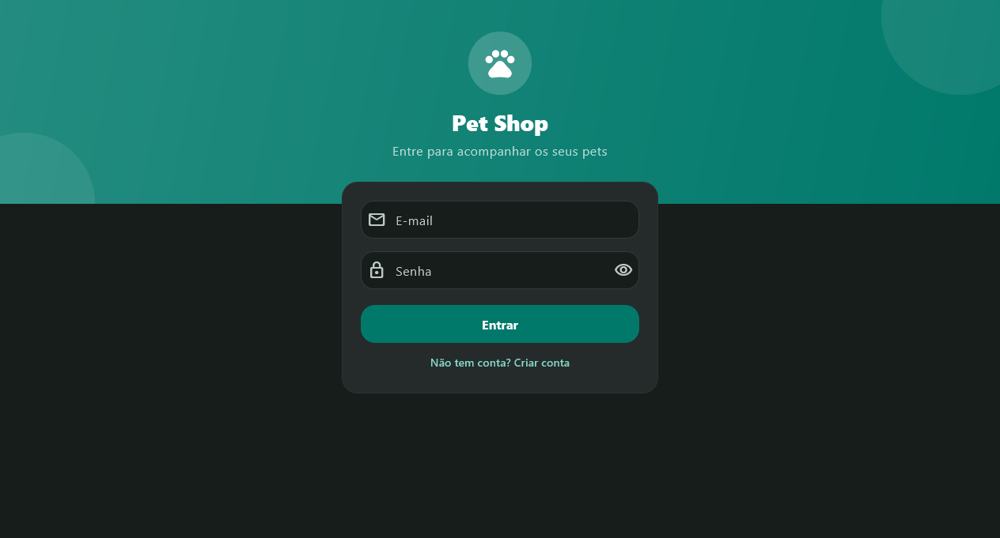
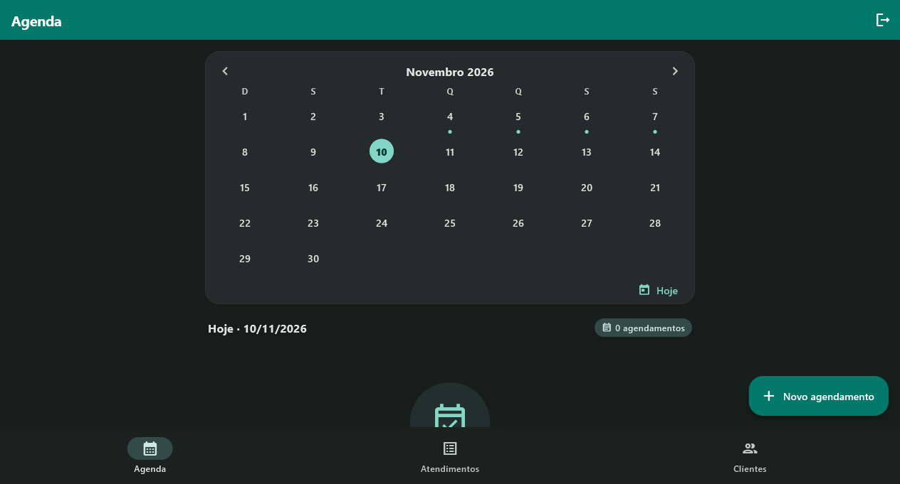
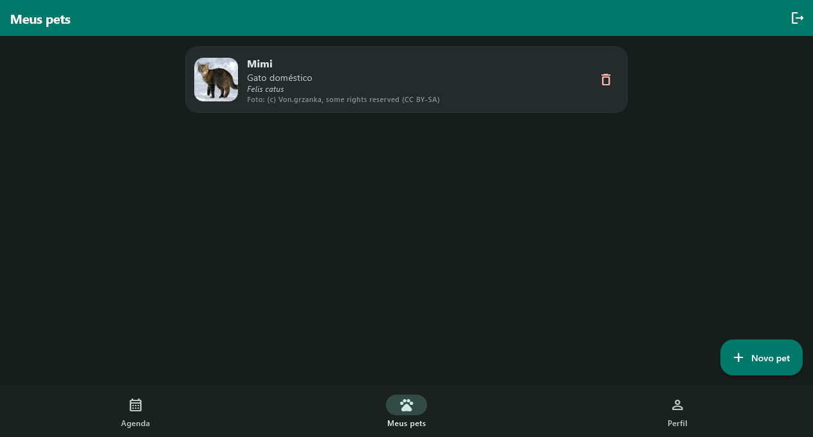
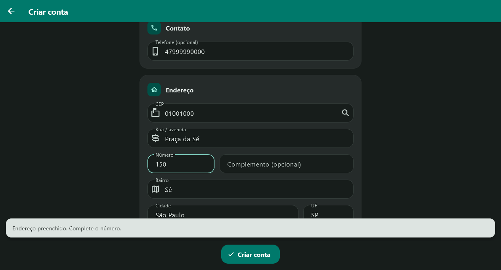
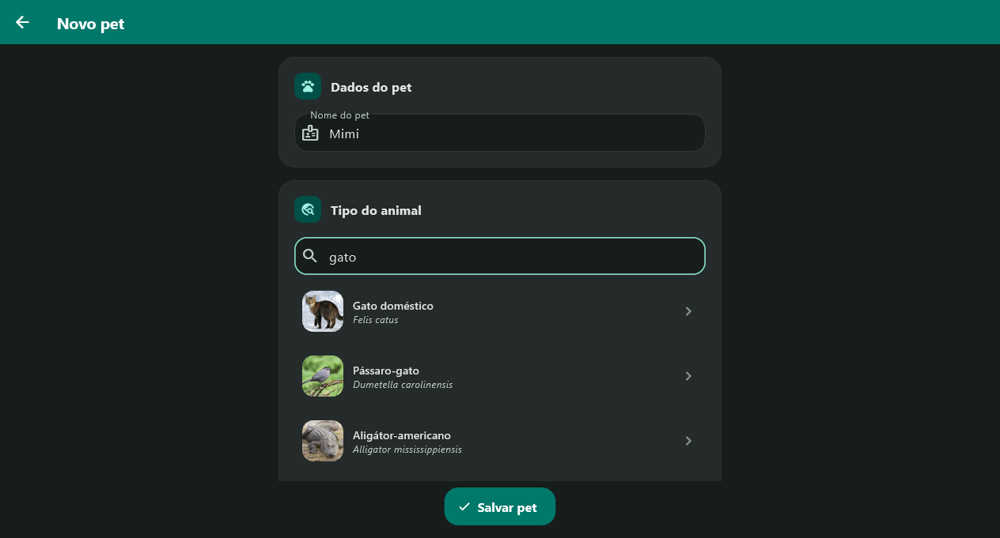
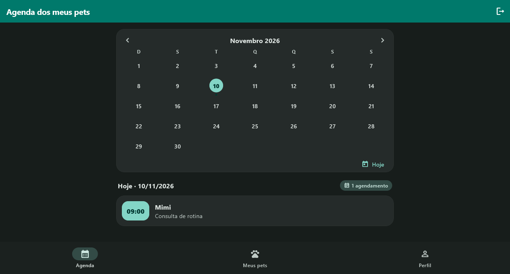
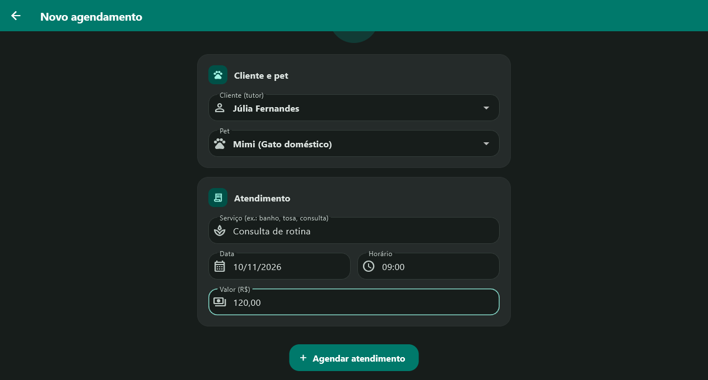

Apresentação técnica e estratégica
Agendamento com contas de cliente e administrador, endereço pelo CEP e espécies do iNaturalist.

Agenda
Negócio
O problema e o que foi entregue
Produto
As telas do administrador e do cliente
Código
Trechos reais, explicados um ponto por vez
Riscos e decisões
O que ainda está em aberto
Negócio
Nome do pet e do tutor digitados à mão, sem horário e sem endereço.
Conta de administrador e de cliente, agenda em calendário, endereço pelo CEP e espécies por API.
Fluxo completo testado de ponta a ponta, com os dados antigos preservados.
Projeto em números
Negócio
| Entrega | Status |
|---|---|
| Login e cadastro de conta | Concluído |
| Conta de administração | Concluído |
| Endereço pelo CEP (ViaCEP) | Concluído |
| Espécies pelo iNaturalist, com foto e crédito | Concluído |
| Agenda em calendário, com cliente e pet | Concluído |
| Migração do banco sem perda de dados | Concluído |
| Troca da senha padrão do administrador | Em aberto |
| Recuperação de senha | Fora do escopo |
Negócio
Oito números preenchem rua, bairro, cidade e UF. CEP de cidade inteira é tratado.
Catálogo de animais em português, com foto e o crédito exigido.
Pontos marcam os dias com agendamento. Os horários ficam em ordem.
Sal aleatório em cada conta. A senha nunca fica em texto puro.
O banco antigo ganha tabelas e colunas. Nada é apagado.
Segue o sistema. As cores vêm do tema, em um só lugar.
Produto · administrador

Calendário do mês, com um ponto nos dias que têm agendamento.
Agendamentos do dia, em ordem de horário.
Atendimentos e clientes na barra inferior.
Produto · cliente

Pets com espécie escolhida na busca do iNaturalist.
Foto com o crédito do autor, exigido pela API.
Agenda só com os agendamentos dos próprios pets.
Produto · cadastro

Digitar os 8 números do CEP chama o ViaCEP.
Rua, bairro, cidade e UF vêm do CEP quando existem.
CEP de cidade inteira: cidade e UF entram; rua e bairro são digitados.
Senha com confirmação e mínimo de 6 caracteres.
Código · endereço
static Future<EnderecoCep?> buscar(String cep) async { final String numeros = cep.replaceAll(RegExp(r'\D'), ''); final dados = await buscarJson(Uri.parse('https://viacep.com.br/ws/$numeros/json/')); if (dados['erro'] == true) { return null; } return EnderecoCep( logradouro: (dados['logradouro'] ?? '') as String, bairro: (dados['bairro'] ?? '') as String, cidade: (dados['localidade'] ?? '') as String, uf: (dados['uf'] ?? '') as String, );1 / 3
Uma conexão para todas as APIs
Tempo limite de 10 segundos. Resposta diferente de 200 vira erro.
CEP inexistente
O ViaCEP responde com erro: true. A função devolve null.
Campos que podem vir vazios
Rua e bairro vêm vazios em CEP de cidade. A tela trata esse caso.
Produto · espécies

Só animais e só espécies, com nome em português.
Cada espécie traz nome científico e foto.
A foto sai com o crédito do autor, exigido pela API.
Código · espécies
static Future<List<TipoAnimal>> buscarAnimais(String termo) async { final Uri uri = Uri.https('api.inaturalist.org', '/v1/taxa', { 'q': termo.trim(), 'taxon_id': '1', 'rank': 'species', 'is_active': 'true', 'locale': 'pt-BR', 'per_page': '15', }); final dados = await buscarJson(uri); final List<dynamic> resultados = (dados['results'] as List<dynamic>?) ?? []; return resultados1 / 3
Só animais
taxon_id 1 é o reino Animalia. Rank species deixa de fora gêneros e famílias.
Nomes em português
Pede o nome comum em português (pt-BR).
Sem resultado, sem erro
Resposta sem resultados vira lista vazia, não exceção.
Produto · agenda

Um ponto em cada dia com agendamento, no mês inteiro.
Ao escolher o dia, a lista mostra os horários em ordem.
O botão Hoje volta para o dia atual.
Código · agenda
final Map<String, int> porDia = {};for (final Atendimento atendimento in widget.atendimentos) { porDia[atendimento.data] = (porDia[atendimento.data] ?? 0) + 1;} // Domingo é a primeira coluna, por isso weekday % 7final int diasNoMes = DateTime(_mes.year, _mes.month + 1, 0).day;final int espacosAntes = DateTime(_mes.year, _mes.month).weekday % 7;final int semanas = ((espacosAntes + diasNoMes) / 7).ceil();1 / 4
Um contador por dia
Cada dia guarda quantos atendimentos tem. O calendário desenha os pontos com isso.
Tamanho do mês
O dia 0 do mês seguinte é o último dia do mês atual.
Casas vazias antes do dia 1
Com domingo na primeira coluna, weekday % 7 conta as casas vazias.
Linhas da grade
Quantas semanas o mês ocupa. A grade não desenha linhas a mais.
Produto · agendamento

Cliente e pet saem das contas cadastradas, sem digitar.
Data e horário pelos seletores do sistema.
O valor é validado antes de salvar.
Código · agendamento
Future<void> _escolherCliente(Usuario cliente, {int? petInicial}) async { final int consulta = ++_consultaPets; setState(() { _cliente = cliente; _pets = []; _pet = null; _carregandoPets = true; }); final List<Pet> pets = await RepositorioPets.listarDoUsuario(cliente.id!); if (!mounted || consulta != _consultaPets) return; setState(() { _pets = pets;1 / 3
Contador de trocas
Cada troca de cliente ganha um número novo.
Resposta antiga descartada
Se a pessoa já trocou de cliente, a resposta da troca anterior é ignorada.
Pets do cliente escolhido
A lista de pets é trocada junto com o cliente, sem misturar contas.
Código · segurança
PBKDF2 com SHA-256, 10 mil iterações e sal aleatório de 16 bytes por conta.
if (partes.length != 4 || partes[0] != 'pbkdf2') { return false;}final List<int> calculada = _pbkdf2( utf8.encode(senha), base64Decode(partes[2]), int.parse(partes[1]),1 / 2
Formato validado
Só aceita pbkdf2:iterações:sal:chave. Outro formato é recusado.
Mesma receita do hash guardado
Recalcula a chave com o sal e as iterações salvos no próprio hash.
Código · dados
Campos principais de cada tabela. A versão 2 acrescenta usuários, pets e colunas.
if (versaoAntiga < 2) { await _criarTabelaUsuarios(db); await _criarTabelaPets(db); await db.execute('ALTER TABLE atendimentos ADD COLUMN usuario_id INTEGER'); await db.execute('ALTER TABLE atendimentos ADD COLUMN pet_id INTEGER');1 / 3
Só roda em banco da versão 1
Quem já está na versão 2 não passa por aqui.
Tabelas novas
usuarios e pets entram ao lado das tabelas que já existiam.
Só acrescenta colunas
ADD COLUMN mantém as linhas antigas. Nada é apagado.
Código · fluxo
Sair volta ao login e limpa a sessão em memória.
Sessao.iniciar(usuario);Navigator.of(context).pushAndRemoveUntil( MaterialPageRoute( builder: (_) => usuario.ehAdmin ? const PainelAdmin() : const PainelCliente(), ), (_) => false,);1 / 3
Sessão antes da troca de tela
A conta entra na sessão antes de qualquer tela nova.
Painel pelo perfil
Administrador vai ao painel de administração. Cliente, ao painel de cliente.
Pilha limpa
Login e cadastro saem da pilha: o botão voltar não reabre a entrada.
Arquitetura
Peças usadas em mais de uma tela
Qualidade
Caso real · CEP 89540000
O CEP de cidade inteira não funcionava no cadastro.
Cidade e UF preenchidas. Aviso: este CEP não tem rua cadastrada. Com rua e bairro digitados, o cadastro conclui.
Análise estática
flutter analyze, sem avisos
Teste ponta a ponta
login, cadastro com CEP, pets, agenda e nova conta de cliente
Teste do CEP de cidade
CEP 89540000 no cadastro, com o aviso certo
Riscos
| Risco | Impacto | Status | Ação |
|---|---|---|---|
| Senha padrão do administrador no código | Alto | Em aberto | Trocar antes de publicar |
| CEP de cidade inteira sem rua | Médio | Decisão | Rua e bairro obrigatórios, por ora |
| Sem recuperação de senha | Médio | Fora do escopo | Avaliar na próxima fase |
| Falha de internet no ViaCEP ou iNaturalist | Médio | Mitigado | Erro não derruba a tela; endereço pode ser digitado |
| Atendimentos antigos sem cliente nem pet | Médio | Mitigado | Ao editar, o admin escolhe cliente e pet |
| Fotos e espécies de terceiros | Baixo | Mitigado | Crédito do autor aparece em cada pet |
Decisões
Trocar a senha padrão antes de publicar. Recomendação: sim.
Manter rua e bairro obrigatórios, por enquanto. Recomendação: sim.
Entrar agora ou na próxima fase. Recomendação: próxima fase.
Próxima ação: trocar a senha do administrador e decidir a regra para CEP de cidade.